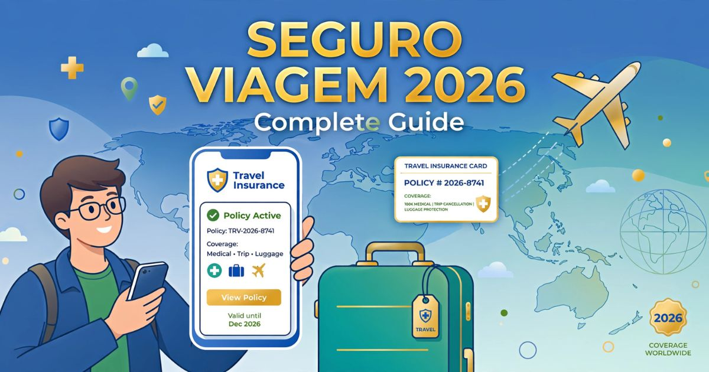

Seguro Viagem 2026: guia completo para viajar com segurança
Introdução: o seguro viagem é realmente necessário?
O seguro viagem é um dos itens mais negligenciados pelos viajantes brasileiros — e um dos mais importantes. Muitas pessoas acreditam que é um gasto desnecessário ou que "nada vai acontecer" durante a viagem. No entanto, imprevistos acontecem, e quando você está em um país estrangeiro, sem conhecer o sistema de saúde local e sem falar o idioma, um problema de saúde ou um acidente pode se tornar um pesadelo financeiro e burocrático.
Em 2026, viajar sem seguro viagem é um risco que poucos viajantes conscientes estão dispostos a correr. Além de ser obrigatório para diversos destinos, como os países da Europa que fazem parte do Tratado de Schengen, o seguro viagem oferece tranquilidade e proteção financeira em situações de emergência. Uma simples consulta médica nos Estados Unidos pode custar milhares de dólares, enquanto um atendimento de emergência na Europa pode facilmente ultrapassar 1.000 euros.
Neste guia completo, você vai entender tudo sobre o seguro viagem em 2026: o que é, por que você precisa contratar, quais são os tipos disponíveis, o que cada plano cobre, quanto custa, como contratar e quais são as melhores seguradoras do mercado. Também abordaremos as exigências específicas de cada destino e daremos dicas valiosas para você escolher o plano ideal para sua viagem.
Nosso objetivo é mostrar que o seguro viagem não é apenas uma burocracia, mas sim um investimento na sua segurança e tranquilidade. Viajar é maravilhoso, mas viajar com segurança é ainda melhor. E o seguro viagem é o seu aliado mais importante nessa jornada.
O que é o seguro viagem
O seguro viagem, também conhecido como seguro de assistência em viagem, é um produto financeiro que oferece cobertura para despesas médicas, hospitalares e odontológicas durante uma viagem internacional. Além disso, ele cobre uma série de outras situações imprevistas, como extravio de bagagem, cancelamento de voos, perda de documentos e até mesmo assistência jurídica em caso de problemas com a lei no país de destino.
Diferentemente do que muitos imaginam, o seguro viagem não é um plano de saúde internacional. Ele funciona como uma rede de assistência: quando você está em um país estrangeiro e precisa de atendimento médico, a seguradora aciona uma rede de prestadores de serviço locais (hospitais, clínicas, laboratórios) para atender você. O custo do atendimento é assumido pela seguradora, dentro dos limites estabelecidos no contrato.
O seguro viagem pode ser contratado por dia, semana ou mês, conforme a duração da sua viagem. Os valores variam de acordo com a cobertura escolhida, o destino, a idade do viajante e a duração da estadia. Coberturas mais abrangentes, que incluem repatriamento, acidentes de trânsito e esportes radicais, têm custos mais elevados.
Além da proteção financeira, o seguro viagem oferece serviços de assessoria 24 horas por dia, 7 dias por semana, em vários idiomas. Isso significa que, em caso de emergência, você pode ligar para um número de telefone e receber orientações em português sobre como proceder, onde ir e como acionar a cobertura.

O seguro viagem é essencial para qualquer viagem internacional
Por que contratar um seguro viagem
As razões para contratar um seguro viagem vão muito além da simples obrigação burocrática. Existem motivos práticos, financeiros e emocionais que tornam esse investimento indispensável para qualquer viajante consciente.
Proteção financeira — O custo de um atendimento médico em países como Estados Unidos, Canadá ou na Europa pode ser exorbitante. Uma internação hospitalar de alguns dias pode facilmente ultrapassar US$ 20.000. Um seguro viagem com boa cobertura cobre esses custos integralmente (dentro do limite contratado), evitando que você tenha que arcar com despesas imprevisíveis que podem comprometer suas finanças pessoais.
Tranquilidade emocional — Saber que você está protegido em caso de imprevistos permite que você aproveite sua viagem com muito mais tranquilidade. Você não precisa viver com o medo de "e se algo der errado?". O seguro viagem é como um colchão de proteção que permite que você se concentre no que realmente importa: aproveitar a experiência.
Obrigatoriedade em alguns países — Diversos destinos exigem a apresentação do seguro viagem na imigração. Os países do Tratado de Schengen (Europa) exigem cobertura mínima de 30.000 euros, incluindo repatriamento. Outros países, como Cuba, também exigem seguro viagem para entrada. Viajar sem seguro nesses casos pode resultar na negativa de entrada.
Assistência em situações complexas — O seguro viagem oferece suporte em situações que vão além da saúde, como cancelamento de voos, perda de bagagem, extravio de documentos (passaporte, visto), assistência jurídica e até mesmo suporte em caso de desastres naturais ou problemas políticos no país de destino.
Atendimento em português — As principais seguradoras oferecem atendimento 24 horas em português. Isso é fundamental em momentos de estresse, quando você está em um país estrangeiro, não fala o idioma local e precisa de ajuda imediata.
Em resumo: o seguro viagem é um dos investimentos mais inteligentes que você pode fazer antes de viajar. O custo do seguro é pequeno comparado aos benefícios que ele oferece e à proteção financeira que ele garante.
Tipos de seguro viagem
Existem diversos tipos de seguro viagem disponíveis no mercado brasileiro, cada um com características específicas e adequado a diferentes perfis de viajantes e tipos de viagem. Conhecer as opções é fundamental para fazer a escolha certa.
Seguro Viagem Básico (Essencial) — Oferece cobertura para despesas médicas, hospitalares e odontológicas de urgência, com valores limitados (geralmente até US$ 30.000). Inclui serviços de assistência básica, como orientação médica por telefone e encaminhamento a hospitais credenciados. É a opção mais econômica e atende à exigência mínima de países que pedem seguro viagem.
Seguro Viagem Intermediário (Padrão) — Além da cobertura médica, inclui assistência para cancelamento de viagem, extravio de bagagem, perda de documentos e atraso de voos. Oferece limites de cobertura mais altos (US$ 50.000 a US$ 100.000) e serviços adicionais como traslado de familiares em caso de hospitalização. É a escolha mais equilibrada para a maioria dos viajantes.
Seguro Viagem Completo (Premium) — Cobertura abrangente com limites de até US$ 150.000 ou mais. Inclui cobertura para acidentes de trânsito, esportes radicais (dependente da seguradora), repatriação, assistência jurídica, pagamento de fiança em caso de prisão, e suporte para perda de passaporte. Ideal para viajantes que realizam atividades de risco ou que buscam máxima tranquilidade.
Seguro Viagem para Idosos — Planos específicos para viajantes com mais de 60 anos, com coberturas adaptadas às necessidades da terceira idade. Geralmente têm limites de cobertura mais baixos e valores mais elevados, devido ao maior risco de problemas de saúde.
Seguro Viagem para Esportes Radicais — Cobertura especial para atividades como esqui, snowboard, mergulho, paraquedismo, montanhismo, entre outros. Nem todas as seguradoras oferecem essa cobertura, por isso é importante verificar as condições específicas do contrato.
Seguro Viagem para Intercâmbio — Planos com duração prolongada (6 meses a 1 ano), com coberturas específicas para estudantes e alta cobertura para despesas médicas. Geralmente exigidos para obtenção de visto de estudante (F1/J1) para os Estados Unidos.
O que o seguro viagem cobre
A cobertura do seguro viagem pode variar significativamente entre as seguradoras e os planos. É essencial ler as condições gerais do contrato e entender exatamente o que está coberto e o que está excluído. Confira os principais itens de cobertura:
Despesas médicas e hospitalares — Cobre consultas, exames, internações, cirurgias, medicamentos e tratamentos de urgência. É o item mais importante do seguro e o que justifica a contratação na maioria dos casos.
Despesas odontológicas — Cobertura para atendimento odontológico de urgência, como extrações, tratamentos de canal e dores agudas. Geralmente tem limite menor que as despesas médicas.
Repatriamento médico — Se necessário, a seguradora organiza e paga o transporte do viajante de volta ao Brasil em caso de doença grave ou acidente. É uma das coberturas mais caras e importantes do seguro.
Cancelamento de viagem — Reembolso de despesas não reembolsáveis (passagens, hotéis, pacotes turísticos) em caso de cancelamento por motivos de força maior, como doença grave, falecimento de familiar ou desastres naturais.
Extravio e atraso de bagagem — Indenização em caso de extravio de bagagem pela companhia aérea ou atraso superior a um determinado período (geralmente 24 horas). Cobre a compra de itens de primeira necessidade (roupas, higiene) durante o período de espera.
Perda de documentos — Assistência para emissão de novos documentos (passaporte, visto, identidade) em caso de perda, furto ou roubo durante a viagem.
Assistência jurídica — Suporte legal em caso de problemas com a lei no país de destino, incluindo orientação jurídica e, em alguns planos, pagamento de fiança.
Atraso de voos — Indenização em caso de atraso de voo superior ao limite estabelecido no contrato (geralmente 6 ou 12 horas). Cobre alimentação, hospedagem e transporte.
Acidentes pessoais — Indenização em caso de morte ou invalidez permanente causada por acidente durante a viagem. O valor depende do plano contratado.
Quanto custa o seguro viagem em 2026
O valor do seguro viagem varia conforme diversos fatores, mas é possível estabelecer uma média para ajudar no planejamento da sua viagem.
| Destino | Cobertura mínima | Preço médio/dia | Preço médio/7 dias |
|---|---|---|---|
| Europa (Schengen) | € 30.000 | ~ R$ 18,00 | ~ R$ 126,00 |
| Estados Unidos | US$ 50.000 | ~ R$ 32,00 | ~ R$ 224,00 |
| América Latina | US$ 20.000 | ~ R$ 12,00 | ~ R$ 84,00 |
| Ásia | US$ 30.000 | ~ R$ 22,00 | ~ R$ 154,00 |
| Oriente Médio | US$ 50.000 | ~ R$ 28,00 | ~ R$ 196,00 |
Fatores que influenciam o preço:
- Idade do viajante — Quanto maior a idade, maior o valor do seguro.
- Destino — Países com custos médicos mais elevados (EUA, Canadá) têm seguros mais caros.
- Cobertura — Quanto maior o limite de cobertura, maior o valor.
- Duração — Quanto mais dias, maior o valor total (embora o valor diário seja menor em viagens mais longas).
- Atividades — Esportes radicais e atividades de risco aumentam o valor.
- Franquia — Alguns planos têm franquia, reduzindo o valor do seguro.
Dica financeira: Contrate o seguro viagem assim que fechar o pacote da viagem. Isso garante cobertura em caso de cancelamento antes do embarque e pode sair mais barato.
Como contratar o seguro viagem
A contratação do seguro viagem é um processo simples e rápido, que pode ser feito totalmente online. Confira o passo a passo:
- Pesquise as seguradoras — Compare as principais opções do mercado. As mais conhecidas no Brasil são: Allianz Travel, Assist Card, GTA, MAPFRE, Zurich, AXA Assistance, Sompo Seguros e Porto Seguro.
- Simule o seguro — No site da seguradora ou de um comparador online (como SegurosPromo ou Minuto Seguros), insira os dados da viagem: destino, datas, número de viajantes, idades e atividades planejadas.
- Compare as opções — Analise as coberturas, limites, franquias, serviços de assistência e valores. Escolha o plano que melhor se adequa ao seu perfil e orçamento.
- Leia as condições gerais — Antes de finalizar a contratação, leia atentamente as condições do contrato, incluindo as exclusões e os limites de cobertura.
- Efetue o pagamento — Os pagamentos podem ser feitos via cartão de crédito, boleto bancário ou Pix, com a opção de parcelamento em alguns casos.
- Receba a apólice por e-mail — Após o pagamento, você receberá a apólice do seguro com o número de contrato, os dados da cobertura e os telefones de emergência. Imprima e leve com você na viagem.
Dica importante: Contrate o seguro viagem com pelo menos 7 dias de antecedência da viagem para garantir que a cobertura de cancelamento esteja ativa e que você tenha tempo de resolver qualquer problema na contratação.
Melhores seguradoras de viagem em 2026
O mercado brasileiro de seguro viagem oferece diversas opções de qualidade. Com base em avaliações de consumidores e cobertura oferecida, destacamos as principais seguradoras disponíveis:
Allianz Travel — Uma das mais populares no Brasil, com ampla rede de assistência na Europa e Estados Unidos. Oferece planos com boa relação custo-benefício e atendimento em português 24 horas. Diferenciais: cobertura para cancelamento e interrupção de viagem, e aplicativo com serviços digitais.
Assist Card — Referência no mercado, com atendimento global e uma das redes de assistência mais amplas do mundo. Planos com coberturas variadas, desde o básico até o premium. Diferenciais: assistência para perda de passaporte e suporte jurídico internacional.
GTA (Global Travel Assistance) — Especializada em seguros para a Europa, com planos que atendem aos requisitos do Tratado de Schengen. Também oferece ótimas opções para outros destinos. Diferenciais: app com serviços integrados e atendimento ágil.
MAPFRE — Seguradora tradicional com planos robustos e coberturas abrangentes. Diferenciais: cobertura para esportes radicais e assistência em mais de 100 países.
Zurich — Multinacional com forte presença no mercado brasileiro, oferecendo planos de alta cobertura e serviços de assistência de qualidade. Diferencial: opção de seguro com e sem franquia.
AXA Assistance — Presente em mais de 200 países, com planos flexíveis e atendimento em vários idiomas. Diferencial: cobertura para doenças crônicas e repatriamento.
Sompo Seguros — Boa opção para viagens de negócios e longa duração. Diferencial: atendimento personalizado e cobertura para acidentes de trânsito.
Porto Seguro — Tradicional no mercado brasileiro, com planos que incluem despesas médicas, odontológicas e cancelamento. Diferencial: facilidade de contratação e suporte em português.
Exigências por país: onde o seguro é obrigatório
O seguro viagem é obrigatório para entrada em diversos países. Conhecer as exigências de cada destino é fundamental para evitar problemas na imigração.
Tratado de Schengen (Europa) — Países como França, Itália, Espanha, Alemanha, Portugal, Holanda, Bélgica, Grécia, Suíça e outros 23 países europeus exigem seguro viagem com cobertura mínima de € 30.000 para despesas médicas, hospitalares e repatriamento. O seguro deve ser válido para toda a estadia no espaço Schengen.
Estados Unidos — O seguro viagem não é obrigatório para entrada no país, mas é altamente recomendado devido aos altos custos médicos. Alguns vistos (especialmente o J1 para intercâmbio) exigem seguro saúde com coberturas específicas.
Canadá — O seguro viagem não é obrigatório para turistas, mas é recomendado devido aos custos médicos elevados. A maioria dos consulados recomenda a contratação para turistas.
Cuba — O seguro viagem é obrigatório para entrada no país. A cobertura mínima exigida é de US$ 50.000 para despesas médicas e repatriamento.
Tailândia — O seguro viagem não é obrigatório, mas o governo tailandês recomenda fortemente a contratação, especialmente para atividades de aventura e esportes aquáticos.
Emirados Árabes Unidos (Dubai) — O seguro viagem é obrigatório para turistas e deve cobrir despesas médicas mínimas durante a estadia.
Quênia — Exige seguro viagem para entrada no país, especialmente para turistas que realizam safáris e atividades ao ar livre.
Nova Zelândia — O seguro viagem não é obrigatório para turistas, mas o governo recomenda a contratação devido aos custos médicos elevados.
Dica importante: Mesmo que o seguro não seja obrigatório, sempre contrate um! O custo de um atendimento médico no exterior pode ser dez ou vinte vezes maior que o valor do seguro.
Dicas importantes para escolher e usar o seguro viagem
Para garantir que você faça a melhor escolha e aproveite ao máximo seu seguro viagem, reunimos estas dicas valiosas baseadas na experiência de viajantes e especialistas:
- Contrate com antecedência — O seguro deve ser contratado antes do início da viagem para que a cobertura de cancelamento seja válida. Idealmente, contrate assim que fechar o pacote de viagem.
- Leia as exclusões — Todo seguro tem exclusões (itens que não são cobertos). Doenças crônicas, gestação, acidentes com esportes radicais e intoxicação alcoólica são as exclusões mais comuns.
- Declare condições pré-existentes — Se você tem doenças crônicas ou condições de saúde preexistentes, informe a seguradora no ato da contratação. Alguns planos oferecem cobertura específica para esses casos.
- Leve o telefone de emergência — Anote ou salve no celular o número de atendimento de emergência da seguradora. Em caso de imprevisto, ligue imediatamente.
- Guarde todos os comprovantes — Em caso de atendimento médico, guarde todos os recibos, relatórios e documentos. Eles serão necessários para o reembolso, se for o caso.
- Não economize na cobertura — Escolha um plano com cobertura adequada ao destino. Para os Estados Unidos, priorize coberturas mais altas (US$ 100.000 ou mais).
- Verifique a validade — O seguro deve cobrir toda a duração da sua viagem, incluindo o dia de partida e o de retorno.
Nunca viaje para o exterior sem seguro viagem! O custo de um atendimento médico urgente em países como Estados Unidos e Canadá pode ultrapassar US$ 10.000. O seguro viagem, além de ser obrigatório em vários destinos, é a garantia de que você não terá prejuízos financeiros em caso de imprevistos. Viajar protegido é viajar com tranquilidade!
❓ Perguntas Frequentes sobre seguro viagem
Não. O seguro viagem é obrigatório para entrada em países do Tratado de Schengen (Europa), Cuba e Emirados Árabes Unidos, entre outros. Para a maioria dos destinos, como Estados Unidos, Canadá, América Latina e Ásia, não é obrigatório, mas é altamente recomendado.
Os países do Tratado de Schengen exigem cobertura mínima de € 30.000 (trinta mil euros) para despesas médicas, hospitalares e repatriamento. O seguro deve ser válido para toda a estadia no espaço Schengen.
Sim, a maioria das seguradoras inclui cobertura para COVID-19 como parte das despesas médicas, desde que o diagnóstico seja confirmado durante a viagem. No entanto, é importante verificar as condições específicas do plano, pois algumas exclusões podem se aplicar.
Não. O seguro viagem deve ser contratado antes do início da viagem. A cobertura só é válida a partir da data de contratação e não pode ser ativada retroativamente.
Alguns planos cobrem, mas é necessário verificar as condições específicas. A maioria das seguradoras oferece cobertura para esportes radicais como opção adicional (endosso). Atividades como esqui, snowboard, mergulho, paraquedismo e montanhismo geralmente exigem essa cobertura extra.
Em caso de atendimento médico, você pode pagar e pedir reembolso após o retorno ao Brasil, ou acionar a rede de prestadores da seguradora para atendimento direto (sem custo). O reembolso exige a apresentação de recibos, relatórios médicos e o formulário de solicitação da seguradora.
Sim, a maioria dos planos de seguro viagem oferece assistência para perda ou roubo de passaporte, incluindo orientação para emissão de novos documentos e, em alguns casos, cobertura para despesas emergenciais. Verifique as condições específicas do seu plano.
Geralmente, crianças de 0 a 17 anos pagam valores menores ou são incluídas gratuitamente (ou com desconto) no plano de um adulto. Consulte as condições de cada seguradora. Para viagens em família, essa é uma excelente forma de economizar.
Para os Estados Unidos, as melhores opções são aquelas com cobertura mínima de US$ 100.000 e boa rede de prestadores no país. As seguradoras mais recomendadas são Allianz Travel, Assist Card e AXA Assistance, que possuem ampla rede de hospitais e clínicas nos EUA.